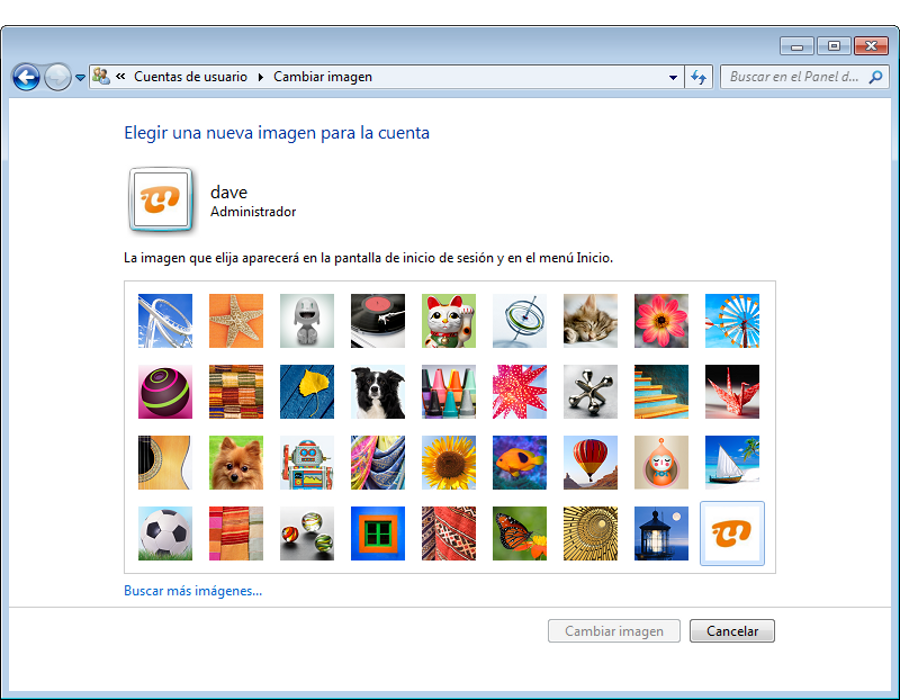
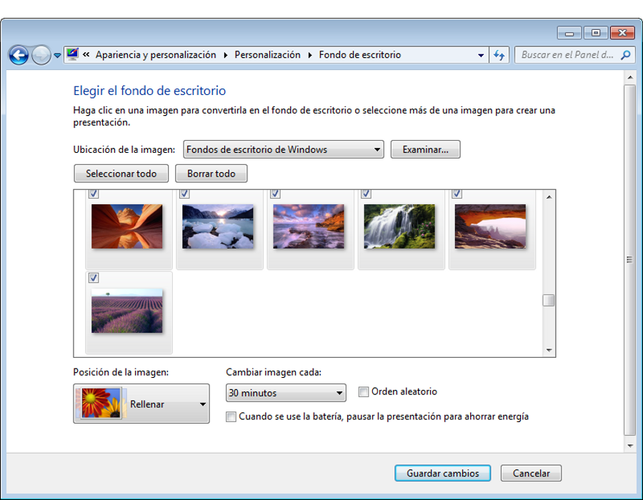
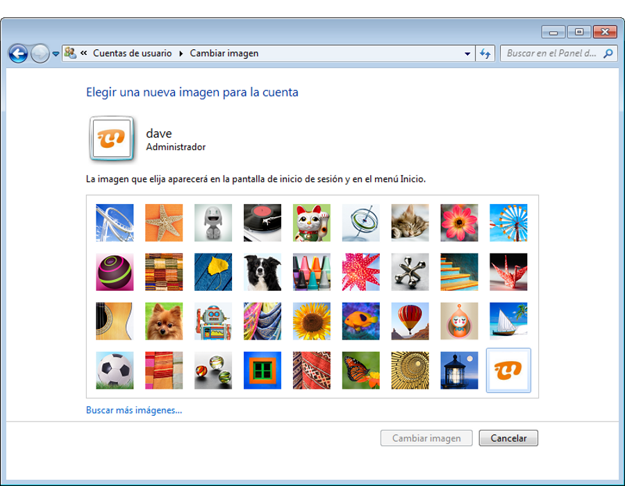
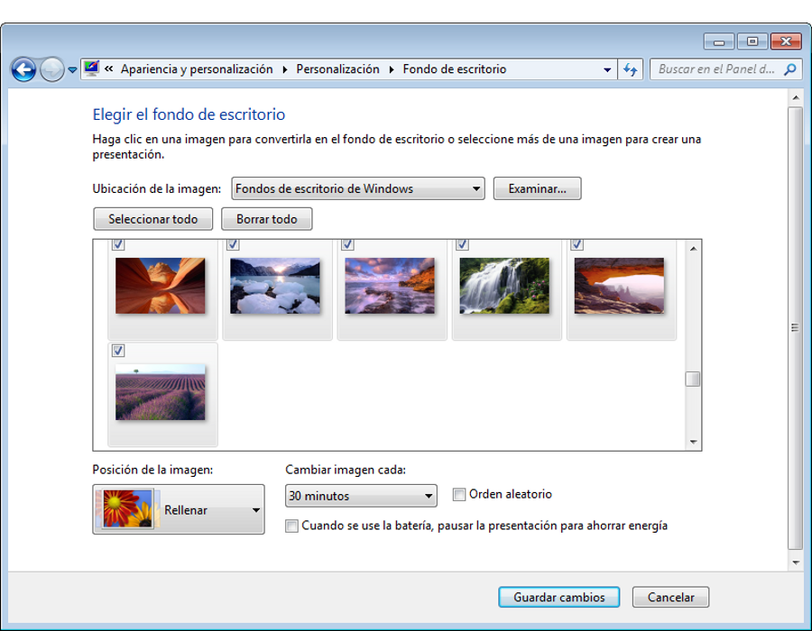

Taller Windows 7
Entorno
Personalizar el entorno de Windows 7
Apreta la tecla → para avanzar.


Una de las características de Windows 7 que no encontramos en Windows XP es que podemos personalizar el entorno con una serie de utilidades que se nos proporcionan para este cometido.
Cambia de foto con las teclas: ↑ y ↓

Tenemos una serie de herramientas disponibles que nos van a permitir cambiar la apariencia de nuestro escritorio para adaptarlo a algo más personalizado.
 



Cambia de foto con las teclas: ↑ y ↓
Los gadgets no son más que información útil presentada de una manera muy atractiva en nuestro escritorio. Tenemos gadgets de:
Cambia de foto con las teclas: ↑ y ↓
Veamos cuáles son las operaciones que podemos realizar con un gadget.